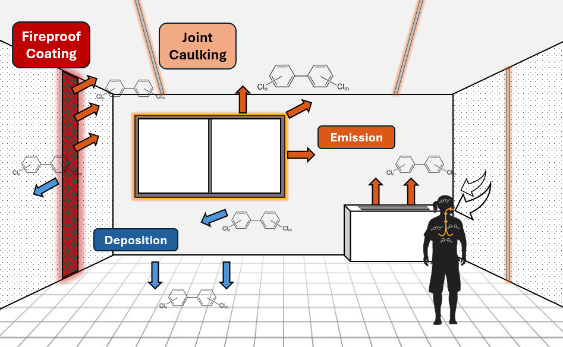

Environmental Science and Engineering
I study a class of chemicals called polychlorinated biphenyls (PCBs) in the environment. PCBs are toxic, man-made chemicals that were used in a variety of industrial and commercial applications such as transformers and capacitors, heat transfer and hydraulic fluid, plasticizers, adhesives, and building materials. PCBs were banned in 1979 because of their toxicity; they are carcinogens, endocrine disruptors, and neurotoxins. Click here to learn more about PCBs.
My current research focuses on identying sources of PCBs in school air and PCB emissions from building materials in schools. To measure PCBs in schools, we deploy polyurethane foam passive air samplers (PUF-PAS) and polyurethane foam passive emission samplers (PUF-PES). [add pics] In collarboration with the Vermont Department of Environmental Conservation and the Vermont Department of Health, we deployed these samplers in 19 schools throughout Vermont between 2022 - 2024 to identify major sources of PCBs in schools.
To isolate PCBs in our samples, we use accelerated solvent extraction followed by acidified column clean up and concentration. We then use gas chromatography tandem triple quadrupole mass spectrometry (GC-MS/MS).